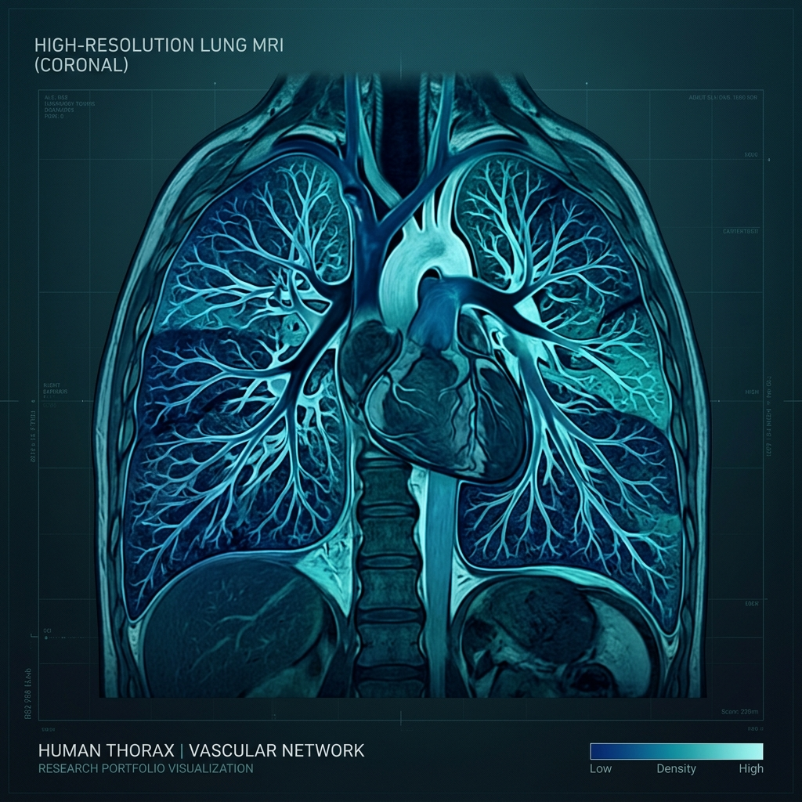

Physics-driven spatio-temporal deep learning for functional lung MRI

Non-contrast-enhanced functional lung MRI provides critical metrics for ventilation and perfusion in pulmonary diseases like cystic fibrosis. Traditional spectral decomposition methods, such as Matrix Pencil (MP) decomposition, suffer from spectral leakage, noise susceptibility, and physiological non-stationarity (e.g., irregular breathing). Here, we introduce VQ-Wave, a physics-driven, spatio-temporal deep learning framework that stabilizes parameter estimation and significantly shortens scan times.
VQ-Wave utilizes an inception-based convolutional neural network trained on high-fidelity synthetic signal models. By processing local spatial context alongside temporal signal evolution, the framework decouples breathing and cardiac oscillations from background noise and scanner drifts.
Unlike pure black-box models, VQ-Wave integrates the physical equations of signal decay and flow dynamics, ensuring that the network's predictions conform to biological constraints.
Validation in healthy subjects and clinical cohorts shows that VQ-Wave achieves comparable diagnostic quality to standard MP decomposition while reducing required acquisition scans from 45 seconds to just 15 seconds. The framework exhibits superior robustness against breathing irregularities, offering a stable clinical pathway for pediatric and dyspneic patients who struggle with long breath-holds.